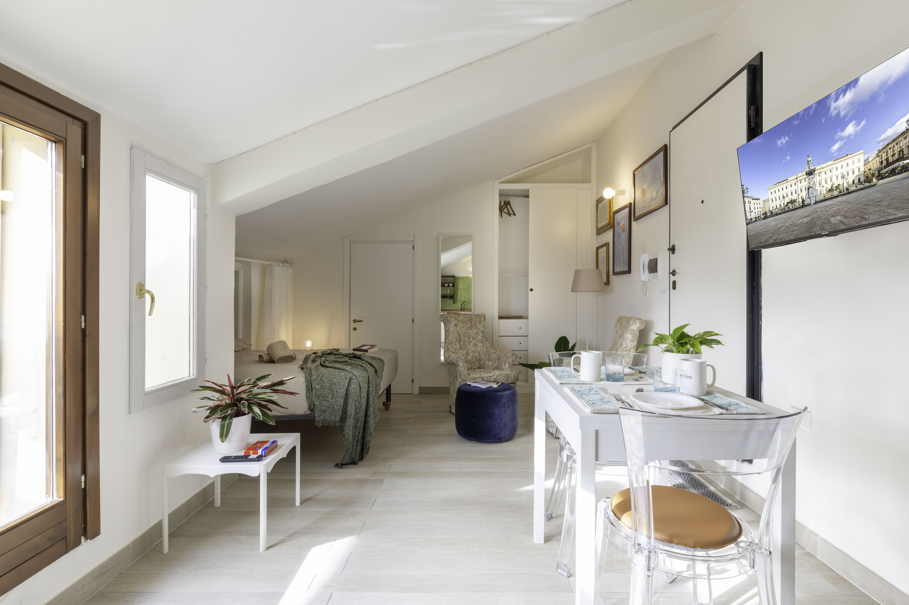
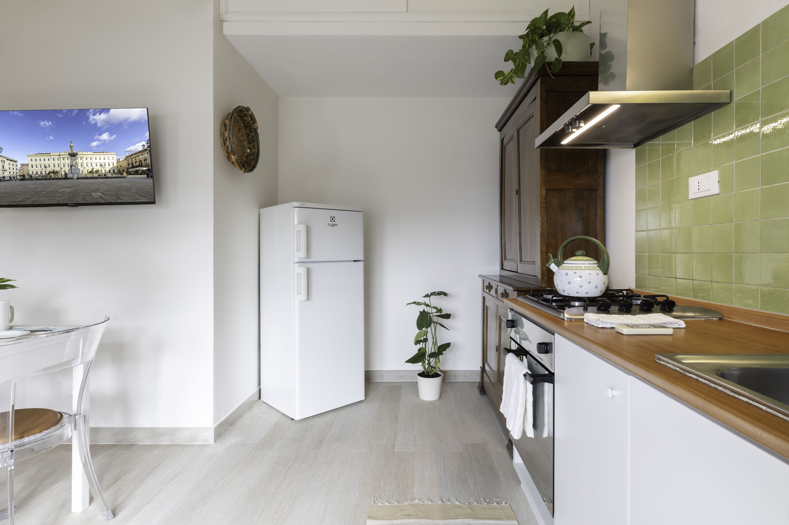
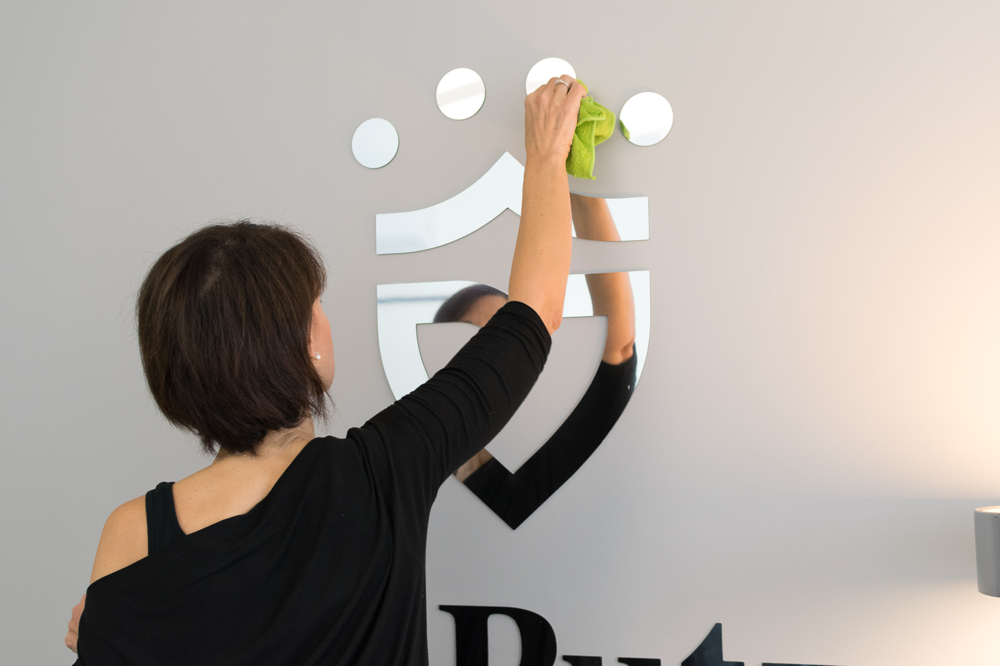

Architettura Estetica
La terapia dello spazio
Valorizzo ambienti domestici e commerciali senza ristrutturare
Parliamo del tuo spazio
La terapia dello spazio
Valorizzo ambienti domestici e commerciali senza ristrutturare
Parliamo del tuo spazioNon serve abbattere muri. Serve un progetto.
Come la medicina estetica migliora l'aspetto senza chirurgia, l'Architettura Estetica valorizza lo spazio senza demolizioni.
Interventi mirati, rapidi, non invasivi: luce, colore, disposizione, materiali, arredi. Non impongo uno stile — costruisco un'identità. Ogni spazio è diverso, come chi lo abita o lo gestisce. E ogni intervento è disegnato su misura, con la competenza tecnica di un architetto e la sensibilità di chi conosce l'impatto dello spazio sulle persone.

Un monolocale al sesto piano, con luce e terrazza come grandi potenzialità, ma privo di identità. Arredi accostati senza criterio, spazio soffocato, nessuna coerenza. Con un budget minimo e arredi di seconda mano recuperati con cura, l'appartamento ha ritrovato un'identità calda e accogliente, pronto per gli affitti brevi.


Un appartamento nobile nel cuore del centro storico di Alghero, con volte alte, finiture di pregio e vista mare. La bellezza c'era già — serviva restituirle luce. Nuovi arredi in dialogo con l'architettura storica, sostituzione della vasca con doccia walk-in, recupero di elementi esistenti. La casa dei proprietari è diventata un'esperienza per gli ospiti, senza tradirne la storia.

Un grande appartamento in un condominio storico del 1963, con pavimenti originali in marmette di graniglia e soffitti alti tre metri. Diviso in due bilocali gemelli per gli affitti brevi, ogni spazio ha trovato la propria identità — uno vintage-pop con il divano giallo acido, l'altro luminoso e raccolto con la pietra naturale in cucina.

Una clinica con oltre trent'anni di storia che doveva rinnovare la propria immagine senza interrompere l'attività con i pazienti. Zero demolizioni, zero macerie: pavimento sovrapposto, porte laccate, sala d'attesa riprogettata da zero. Lo studio dentistico è diventato un luogo dove i pazienti — compresi i bambini — si sentono accolti come a casa.



Osservo lo spazio, ascolto le tue esigenze, capisco gli obiettivi. Ogni ambiente ha le sue potenzialità — il primo passo è leggerle.
Identifico cosa togliere, cosa valorizzare, cosa aggiungere. Ti presento un progetto con costi e tempi chiari, senza sorprese.
Coordino tutto io: pitture, arredi, illuminazione, allestimento. Tu non devi pensare a nulla — gestisco fornitori, imprevisti e tempistiche.
Risultato visibile, funzionale, che racconta chi sei. Uno spazio che le persone scelgono, rispettano, ricordano.
Sono architetto. Mi sono laureata ad Alghero e per oltre dieci anni ho fatto quello che fa un architetto di interni: ristrutturazioni, cantieri, direzione lavori, arredi su misura. Entrare nelle case delle persone, capire come vivono, e progettare lo spazio della loro quotidianità.
Negli stessi anni, i miei genitori — entrambi dentisti — stavano trasformando il loro studio in una realtà imprenditoriale più strutturata. È stato un passaggio importante, e ne sono diventata parte. Accanto al mio lavoro di architetto, mi sono trovata a occuparmi di cose che all'università non mi avevano insegnato: come si posiziona un brand, come si comunica un valore, come si costruisce l'esperienza di una persona prima ancora che riceva un servizio. Mi sono formata, ho studiato, ho fatto. Quella clinica l'abbiamo fatta crescere insieme e poi venduta. E in quel percorso ho capito una cosa che ha cambiato il mio modo di lavorare: lo spazio in cui accogli le persone è già cura. Viene prima di tutto il resto — prima del servizio, prima delle parole, prima della competenza. È il gesto più immediato, il più concreto, il più visibile. La cura dello spazio è la prima terapia possibile.
Poi nel 2021 ho iniziato a gestire appartamenti per affitti brevi, partendo da un piccolo bilocale che avevo ricavato dal mio appartamento. È nato quasi per caso, ma quello che ho scoperto non lo era affatto: lo spazio curato viene scelto di più, rispettato di più, pagato di più. Ogni prenotazione, ogni recensione, ogni ospite che trattava l'appartamento con riguardo me lo confermava. Quello che sapevo fare come architetto aveva un valore misurabile. Concreto. Quotidiano.
Architettura Estetica nasce nel punto in cui queste esperienze si incontrano. Non l'ho pianificato — è successo. Ho capito che il mio modo di guardare le cose era sempre stato lo stesso: leggere quello che c'è, capire cosa non funziona, e ricomporlo fino a quando non trova il suo significato.
Non tutti gli ambienti hanno bisogno di essere ristrutturati.
Tutti hanno bisogno di essere progettati.
Il tuo appartamento deve diventare desiderabile e competitivo. Servono risultati rapidi, con budget controllato e resa economica misurabile. Progetto spazi che si prenotano di più, si recensiscono meglio, si pagano a un prezzo superiore.
La tua casa non ti rappresenta più, ma è ancora in buone condizioni. Vuoi rinnovarla senza il trauma di una ristrutturazione. Senza operai, senza traslochi, senza stress.
Il tuo spazio di lavoro deve comunicare professionalità, identità e cura. I tuoi clienti lo percepiscono prima ancora di parlare con te.
Quando lo spazio ha bisogno di interventi strutturali, impiantistici o di una trasformazione radicale, offro anche il servizio completo di ristrutturazione e progettazione di interni. Stessa attenzione alla bellezza, all'identità e al benessere — con un intervento più profondo.
Nasce da una constatazione: non tutti gli ambienti hanno bisogno di essere ristrutturati, ma tutti possono — e devono — essere progettati per valorizzare ciò che già esiste. È un campo che richiede competenze tecniche, sensibilità visiva e capacità di ascolto profondo. Non è home staging. Non è decorazione. È architettura applicata all'esistente.
Alghero · Sassari · Nord Sardegna